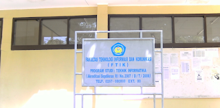

Fakultas Ilmu Komputer semula bernama Fakultas Teknologi Informasi dan Komunikasi (FTIK) Didirikan pada tanggal 18 Juli 2008 berdasarkan Surat Keputusan Yayasan Pembina Perguruan Tinggi Pangkal Perjuangan Nomor 019/SK/YPPTPP/USK/VII/2008 tentang Pembentukan Fakultas Teknologi Informasi dan Komunikasi Universitas Singperbangsa Karawang.

Selanjutnya berdasarkan Sur at Keputusan Yayasan Pembina Perguruan Tinggi Pangkal Perjuangan Nomor 017/SK/YPPTPP/USK/VI/2010 tentang perubahan nama Fakultas Teknologi Informasi dan Komunikasi Universitas Singperbangsa Karawang, maka sejak tanggal 21 Juni 2010 berubah nama menjadi Fakultas Ilmu Komputer disingkat Fasilkom.